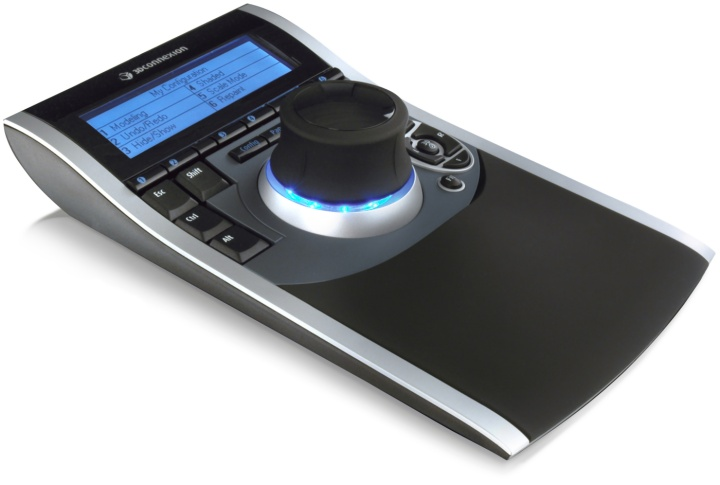
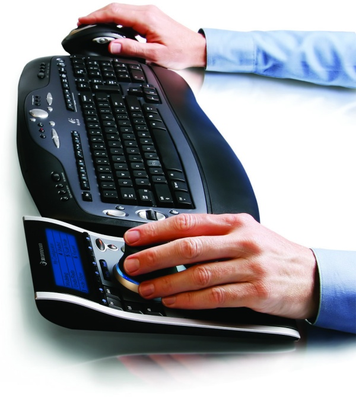
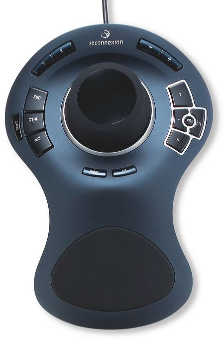

|
SpacePilot

Büyük resim için týklayýnýz
Autopilot:
Akýllý Autopilot, uygulamayý ve geçerli durumu tanýr, 3D uygulamalarýyla daha hýzlý ve basitleþtirilmiþ bir etkileþim için kontrolleri "anýnda" atar.
Görsel Feedback:
LCD ekran güncel olarak atanmýþ fonksiyonlarý ve komutlarý gösterir. Herhangi bir program dahilinde uygulama ya da çeþitli çalýþma modlarý açtýðýnýzda, bu fonksiyon ve komutlar güncellenir.
21'den Fazla Programlanabilir Tuþ:
Bir dizi geniþletilebilir ve programlanabilir tuþ, tamamen dizaynýnýza konsantre olmanýza yardýmcý olur.

Sanal Uzantýnýz
3D modellerinizi kontrol etmek için SpacePilot 3D Mouse kullanmak, onlarý elinizde tutmak kadar kolay. Özel tuþuna parmak uçlarýnýzla yapacaðýnýz hafif hareketler, 3D objelerinize keskin ve kolay kontrol imkaný sunar.
Üstün 3D Navigasyon Deneyimi
SpacePilot her boyutta kolay navigasyonu destekler. SpacePilot ile, modelinizi her þekilde konumlandýrýrsýnýz - döndürme, kaydýrma, yakýnlaþtýrma, akýcý hareketler. 3D mouse geleneksel mouse'lara eþlik edecek þekilde, boþ olan el aracýlýðýyla kullanýlýyor. Mouse için olan eliniz, eþ zamanlý olarak modeli düzenlemek için ya da menü seçimleri için özgür.
Özellikler
- Kolay 3D navigasyon
- Programlanabilir Program Tuþlarý
- Gösterimler için atanmýþ tuþlarý, klavye deðiþtiricileri
- LCD Panel
- Uygulama Tanýma
SpacePilot videosu için: www.flixfacts.co.uk/....3dconnexion-3dx-700002
Daha fazla bilgi için: www.3dconnexion.com/products/spacepilot.html
SpaceExplorer

Konfor
Ýpeksi, ergonomik ve elinizin þeklini alan bir 3D mouse ile yorgunluðu azaltýn. Üstelik her iki elinizin kullanýmýna da uygun.
Performans
Ortalama fiyat, üstün performans.
Uygulama Algýlamasý
Otomatik olarak, fonksiyonlarý sizin deðiþtirdiðiniz þekilde tuþlara atar.
Sanal Uzantýnýz
3D modellerinizi kontrol etmek için SpaceExplorer 3D Mouse kullanmak, onlarý elinizde tutmak kadar kolay. Özel tuþuna parmak uçlarýnýzla yapacaðýnýz hafif hareketler, 3D objelerinize keskin ve kolay kontrol imkaný sunar.
Üstün 3D Navigasyon Deneyimi
SpaceExplorer her boyutta kolay navigasyonu destekler. SpaceExplorer ile, modelinizi her þekilde konumlandýrýrsýnýz - döndürme, kaydýrma, yakýnlaþtýrma, akýcý hareketler. 3D mouse geleneksel mouse'lara eþlik edecek þekilde, boþ olan el aracýlýðýyla kullanýlýyor. Mouse için olan eliniz, eþ zamanlý olarak modeli düzenlemek için ya da menü seçimleri için özgür.
%50 Daha Az Týk, %30 Daha Fazla Verimlilik
Etiketlenmiþ ve önceden programlanmýþ 15 fonksiyon tuþu ve lider 3D dizayn uygulamalarý iþleri sizin için kolaylaþtýrýr. Önemli fonksiyonlara ulaþýlmasý kolay, parmaklarýnýzýn ucunda. Daha az týkla, daha çok iþin üstesinden gelebilirsiniz.
SpaceExplorer videosu için: www.flixfacts.co.uk/....3dconnexion-3dx-700026
Daha fazla bilgi için: www.3dconnexion.com/products/spaceexplorer.html
|